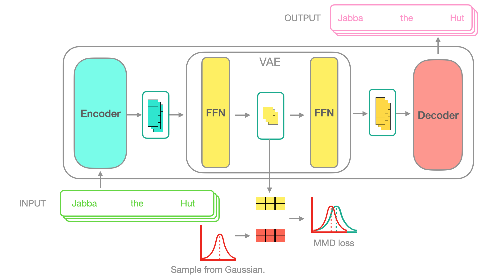

JAX allows writing simple code that runs efficiently on TPUs. These models can then operate on massive scales setting new benchmarks in performance.
For an intro to JAX & Flax please checkout day 1 talks from the Huggingface Jax sprint.
{% include youtube.html content=“https://youtu.be/fuAyUQcVzTY” %}
You can find the code from this post at t5-vae-python, t5-vae-wiki and the model code t5-vae-flax.
Making your own transformer
Its important to remember that deep neural nets learning the same task learn universal features see circuits. This means all transformer architectures are largely equivilent with only small changes mattering.
With that in mind you should probably build your new model on existing Transformers.
For the Transformer-VAE I wanted to modify a T5 model to average pool the hidden states into one token.
{% include video.html url=“/videos/avg-pool-t5.mp4” %}
And to autoencode that hidden token with a VAE.

With a regularising MMD-VAE loss that operates on each batch.

This would allow interpolating on sequences.
How I made the Transformer
The trained models will have their own git repos on the model hub with the model code as a git submodule shared between all trained models.
To make a new Flax Tranformer there’s some boilerplate you’ll need to start off with.
Adds the extra configuration options your new transformer will need:
from transformers.configuration_utils import PretrainedConfig
from transformers import AutoConfig
class T5VaeConfig(PretrainedConfig):
model_type = "transformer_vae"
is_composition = True
def __init__(
self,
# custom VAE config
t5_model_name_or_path=None,
n_latent_tokens=6,
latent_token_size=32,
...
# T5 config
t5=dict(),
vocab_size=32128,
d_model=512,
...
# end
**kwargs,
):
...
# You can load other configs as attributes to your own config
self.t5 = AutoConfig.from_pretrained(t5_model_name_or_path, cache_dir=cache_dir)
assertEqual(self.t5.model_type, "t5", "Need t5 model type for transformer_decoder.")
self.t5.decoder_start_token_id = decoder_start_token_idThis holds the main source code for the model.
class FlaxT5VaeForAutoencodingModule(nn.Module):
'''
Runs the model inference.
'''
config: T5VaeConfig
dtype: jnp.dtype = jnp.float32 # the dtype of the computation
def setup(self):
# Here we initialise the transformer we're building on
self.t5 = FlaxT5ForConditionalGenerationModule(self.config.t5)
# And load the VAE to be added.
self.vae = VAE(self.config)
class FlaxT5VaePreTrainedModel(FlaxPreTrainedModel):
'''
An abstract class to handle weights initialization and a simple interface for downloading and loading pretrained models.
'''
config_class = T5VaeConfig
base_model_prefix = "transformer"
module_class: nn.Module = None
def __init__(
self,
config: T5VaeConfig,
input_shape: Tuple[int] = (1, 1),
seed: int = 0,
dtype: jnp.dtype = jnp.float32,
**kwargs
):
module = self.module_class(config=config, dtype=dtype, **kwargs)
super().__init__(config, module, input_shape=input_shape, seed=seed, dtype=dtype)
class FlaxT5VaeForAutoencoding(FlaxT5VaePreTrainedModel):
'''
Holds the module class & prepared inputs for inference.
'''
module_class = FlaxT5VaeForAutoencodingModuleFor the custom Flax model (in this case a VAE) its just a regular Flax model.
class VAE(nn.Module):
config: T5VaeConfig
dtype: jnp.dtype = jnp.float32 # the dtype of the computation
def setup(self):
self.encoder = VAE_ENCODER_MODELS[self.config.vae_encoder_model](self.config.latent_token_size, self.config.n_latent_tokens)
self.decoder = VAE_DECODER_MODELS[self.config.vae_decoder_model](self.config.t5.d_model, self.config.n_latent_tokens)
def __call__(self, encoding=None, latent_codes=None):
latent_codes = self.encode(encoding)
return self.decode(latent_codes), latent_codesFor more Flax examples see What does Flax look like.
Training
Now that you’ve got your model code setup you can start training!
First make a new huggingface model.
This will hold the training code and model weights.
For a train script build on one of the Huggingface examples.
You just need to switch out the model initialisation.
Debugging
JAX is efficient because it gets compiled into XLA. This is great for performance but it makes debugging tricky.
To get incremental runs of your code in Python you should build off the tests already in transformers.
Run Training
During the HF sprint I got to use a TPUv3-8 which allowed training with an 800 batch size with N tokens per sentence.
Sadly this training only started 6 hours before the contest ended so it only saw 5% of wikipedia.
Final thoughts
While the I wasn’t able to get the performance I wanted with the Transformer-VAE I am excited to see people do with TPUs.